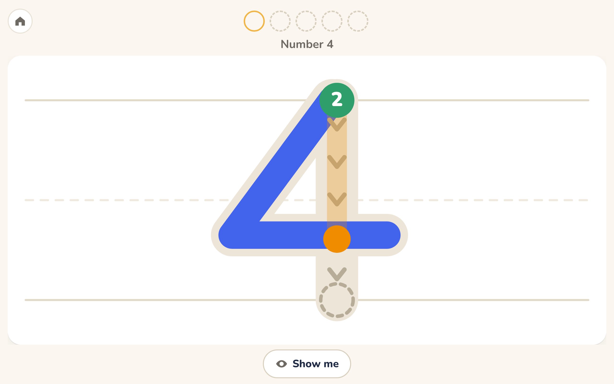

Write a number.
See a picture.
A calm, reward-based writing app for a 4-year-old autistic learner who loves pictures. Built for an Android tablet and stylus.
November 2026 · Use ← → keys, click or swipe


The brief
Teach writing with what he loves: pictures
Who and where
A 4-year-old autistic boy, starting to write. He loves images. He'll use a Lenovo tablet with a stylus.
The reward
On each success, exactly one picture with its spelling, drawn from 300 pictures suited to his age. No picture bank to choose from.
What to write
Numbers 1–9 first. Capital letters A–Z are added later.
Grows with him
At first: big characters with lots of room for error. As he masters it, the room shrinks, characters get smaller, and more appear on each screen.
For the parent
Stars for every character, so you can see where he is doing well and where he needs practice.
One turn, in one line

Trace the number, then see and hear one picture and its spelling.
The core loop
One turn takes about a minute, and the steps never change
 ›
›See the plan
First write, then picture
Show me
A dot draws the stroke; the voice says "three"
Trace
1 to 4 characters, depending on his level
One picture
"Elephant! E-L-E-P-H-A-N-T"
A star
One more in the row

All done
A calm finish
Short: about a minute per turn and 3–8 turns per session, so it ends before attention runs out.
Predictable: the steps never change order, and the level only changes between sessions.
Positive: there is no fail state anywhere in the loop, only "not yet".
Mock screen 4 · Reward
Reward: one picture, its spelling, and a star
1
2
3
4
5
- One picture, straight awayA different one each time: 300 in a shuffled order, none repeated until all have been seen. Tap it to hear it again.
- The word in big tilesLong words get smaller tiles so they always fit on one line.
- Voice + highlight"Elephant! E, L, E, P, H, A, N, T. Elephant!" Each tile lights up as it's said.
- A star fillsProgress he can see, like a token board.
- NextOr Again to write the same characters once more.
Reward pictures
300 everyday pictures with simple words he can learn


What's in the 300
Common words a 4-year-old hears every day, from Cat and Bus to Rickshaw and Lotus. Nothing scary: no weapons, monsters or spiders.
The list lives in one file (rewards.js), so pictures and words are easy to change.